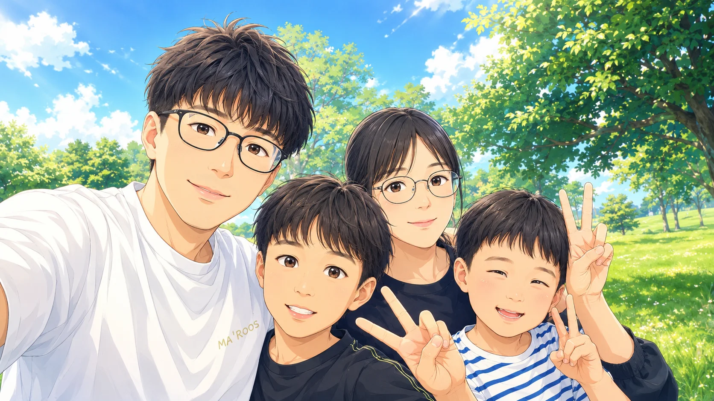

FAMILY ILLUSTRATION EXHIBITION
하늘을 나눠 가진 우리
푸른 날마다 다시 만나는 가족 그림전
함께 웃었던 순간에는 늘 저마다의 하늘이 있었습니다. 마음 가는 순서대로 그림 사이를 천천히 걸어 보세요.
그림 사이를 걷기
ABOUT THE EXHIBITION
한 가지 분류 대신,
우리다운 흐름으로
가족이 함께한 여행과 산책, 응원과 휴식의 장면을 정해진 순서 없이 펼쳤습니다. 가로와 세로, 가까운 얼굴과 넓은 풍경이 서로 다른 리듬으로 이어집니다.
OPEN GALLERY
오늘의 하늘빛 모음
24개의 그림 · 자유 관람
ONE SKY, MANY DAYS
같은 하늘 아래서
우리는 서로의 계절이 되었습니다.